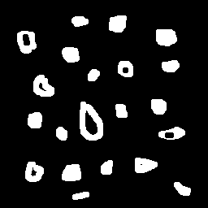

Questão 1.1: Manipulando pixels em uma imagem
O programa inicial solicita ao usuário as coordenadas e captura o negativo da área retangular. O algoritmo converte a imagem em tons de cinza e, para cada pixel na região, calcula 255 menos o valor do pixel:
# Invert img operation
for i in range(start_point[0], end_point[0]):
for j in range(start_point[1], end_point[1]):
img[j][i] = 255 - img[j][i]

Questão 1.2: Troca de regiões
Este código particiona a imagem em quatro quadrantes e troca suas respectivas regiões:
rows, cols = img.shape[:2]
# Getting quadrant img
quad_1 = img[0:rows//2, 0:cols//2]
quad_2 = img[0:rows//2, cols//2:cols]
quad_3 = img[rows//2:rows, 0:cols//2]
quad_4 = img[rows//2:rows, cols//2:cols]
new_img = np.empty_like(img)
# Realocating quadrants in new image
new_img[0:rows//2, 0:cols//2] = quad_4
new_img[rows//2:rows, cols//2:cols] = quad_1
new_img[rows//2:rows, 0:cols//2] = quad_2
new_img[0:rows//2, cols//2:cols] = quad_3

Questão 2: Decomposição de imagens em planos de bits
De acordo com N. F. Johnson e S. Jajodia (1998), a esteganografia é uma técnica que envolve ocultar um arquivo dentro de outro de forma criptografada. Ao contrário da criptografia, que busca tornar as mensagens incompreensíveis, o objetivo da esteganografia é esconder a existência de uma mensagem específica, camuflando-a dentro de arquivos, como imagens, músicas, vídeos ou textos. Com essa abordagem, é possível ocultar mensagens dentro de imagens, por exemplo, sem despertar suspeitas de que algo esteja escrito nelas. No exemplo abaixo temos uma imagem contida em outra. Para descobrirmos a mensagem escondida dentro da imagem portadora usaremos operação bit a bit. Para isso, foi retirado os 5 bits mais significativos dos pixels da variável img_carrier e os 3 bits menos significativos serão alocados em uma nova variável img_encoded.
import cv2
import numpy as np
img = cv2.imread("unidade 01\decomposicao_img_bits\imgs\desafio-esteganografia.png")
if img is None:
print("Erro ao abrir a imagem")
exit()
img_carrier = np.copy(img)
img_encoded = np.copy(img)
nbits = 3
img_carrier = img >> nbits << nbits
img_encoded = img << (8 - nbits)
cv2.imshow("Imagem portadora", img_carrier)
cv2.imshow("Imagem codificada", img_encoded)
cv2.waitKey()


Questão 3: Preenchendo Regiões
O objetivo deste programa é contar os objetos da imagem, distinguindo entre aqueles com e sem buracos:
def is_object_on_edge(x, y, row, col):
top_and_left = x == 0 or y == 0
bottom_and_right = x == col - 1 or y == row - 1
return top_and_left or bottom_and_right
# Cropping objects on edges
for i in range(rows):
for j in range(cols):
if is_object_on_edge(j, i, rows, cols):
cv2.floodFill(img, None, (j, i), 0)

Após a leitura da Figura 7, é feito um pré-processamento, retirando as bolhas que tocam as bordas da imagem:
Em seguida, é mudado o fundo da imagem para facilitar a contagem de buracos nas bolhas:

# Chaging background to gray
cv2.floodFill(img, None, (0, 0), 133)
Logo depois, é feito a contagem de ocorrencias de bolhas e buracos contidos na imagem.:
# Looking for objects with and without holes
for i in range(rows):
for j in range(cols):
if img[i][j] == 255:
obj += 1
cv2.floodFill(img, None, (j, i), obj)
elif img[i][j] == 0:
obj_holes += 1
cv2.floodFill(img, None, (j, i), obj_holes)
print("Total of {} objects".format(obj))
print("Total of {} objects with hole".format(obj_holes))
print("Total of {} objects without hole".format(obj - obj_holes))
Saída:
Total of 21 objects
Total of 7 objects with hole
Total of 14 objects without hole